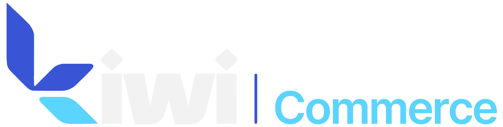

Une boutique à votre image
Un parcours mobile fluide, votre catalogue et un paiement à la livraison. Vos clients commandent sans carte bancaire.
Sites web, applications et e-commerce. Nous créons les outils qui font avancer votre entreprise.
01 / NOS EXPERTISES
Du premier clic à l’outil qui change votre quotidien. Une équipe, une vision, un projet qui vous ressemble.
Vitrine, plateforme ou site sur mesure. Une présence en ligne soignée, rapide et pensée pour transformer les visites en contacts.
Applications web et mobiles, portails clients et outils internes. Un logiciel construit autour de vos usages, pas l’inverse.
Kiwi Commerce réunit votre boutique en ligne et votre tableau de bord. Conçu pour vendre au Maroc, avec paiement à la livraison.
L’ESPRIT KIWI
LE E-COMMERCE, À LA MAROCAINE.

Au Maroc, la vente en ligne se joue à la livraison. Votre boutique et vos opérations méritent un outil pensé pour cette réalité.
Créer ma boutique↗La confirmation déclenche la sortie du stock.
Un parcours mobile fluide, votre catalogue et un paiement à la livraison. Vos clients commandent sans carte bancaire.
Coordonnées, ville, adresse, tailles et couleurs : les informations utiles pour confirmer, expédier et suivre chaque commande.
Le stock diminue à la confirmation. Une commande confirmée puis annulée remet les articles en stock automatiquement.
Un tableau de bord protégé par connexion et une base de données isolée pour votre entreprise.
02 / UNE MÉTHODE, PAS DE FLOU
Un échange direct. Des étapes claires. Et vous, dans la boucle tout au long du projet.
Vos objectifs, vos clients, vos contraintes. On définit ensemble le périmètre et les priorités.
Une direction visuelle et des parcours concrets. Vous voyez où l’on va avant le développement.
Développement, intégrations et tests sur vos usages réels. Chaque détail trouve sa place.
Mise en ligne, prise en main et accompagnement. La suite se prépare avec vous.
QUELQUES RÉPONSES
Kiwi Systems est la branche de Kiwi dédiée à la création de sites web, d’applications et de logiciels sur mesure. Kiwi Commerce est notre offre e-commerce.
Chaque projet dépend de son périmètre, de ses fonctionnalités et de ses intégrations. Après un premier échange, nous vous proposons un devis adapté.
Oui. Le client commande sans carte bancaire. Vous recevez la commande dans votre tableau de bord, puis vous la confirmez ou la refusez avant d’en suivre l’expédition et la livraison.
Oui. Portail client, application métier ou intégration à vos outils existants : nous définissons la solution à partir de votre façon de travailler.
LA SUITE, ON LA CONSTRUIT ENSEMBLE.
Racontez-nous ce que vous voulez créer.
On s’occupe du prochain pas, ensemble.